El Grupo Bolívar necesitaba unificar la forma en que sus marcas digitales — Seguros Bolívar, Servicios Bolívar, Jelpit, Ciencuadras y Dr. Aki — diseñaban y construían interfaces. Cada equipo trabajaba de forma independiente, generando inconsistencias visuales, deuda técnica y duplicación de esfuerzos. La solución fue un Design System transversal: una base común en escala de grises con tokens que se "pintaban" con los colores de cada marca, permitiendo que todos los equipos contribuyeran y consumieran desde un mismo sistema.
El sistema se construyó siguiendo los principios de Atomic Design — átomos, moléculas y organismos — combinados con patrones de componentes de Angular y reglas propias de accesibilidad y usabilidad. La base era una biblioteca en escala de grises, marca blanca, que cada equipo adaptaba aplicando los tokens de color de su marca. Los diseñadores de todos los equipos contribuían a construir componentes, y el equipo de desarrollo los mantenía en una biblioteca en línea disponible para consulta y uso permanente.
Fui diseñador contribuidor del equipo central — participé en la conceptualización del sistema transversal, la lógica de marca blanca, la definición de tokens y la construcción de componentes del sistema base.
Adicionalmente representé a Jelpit Conjuntos, identificando y construyendo los componentes específicos que el producto SaaS necesitaba: zona privada, consulta y gestión de transacciones, estados de cuenta y servicios de administración de propiedad horizontal.
Cifras del sistema transversal completo, construido por todo el equipo:
+ 200
Estilos
26
Átomos
18
Moléculas
5
Organismos
Las imágenes muestran dos capas del sistema: la base transversal en escala de grises, compartida por todas las marcas, y su implementación específica para Jelpit — con los tokens de color, componentes y patrones propios del producto.
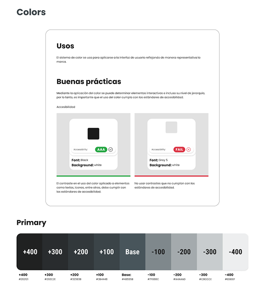
Colores — Escala de grises
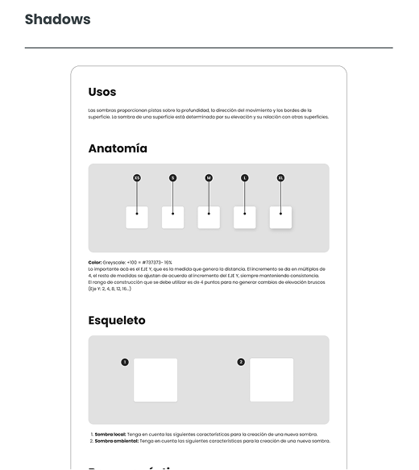
Sombras — Transversal
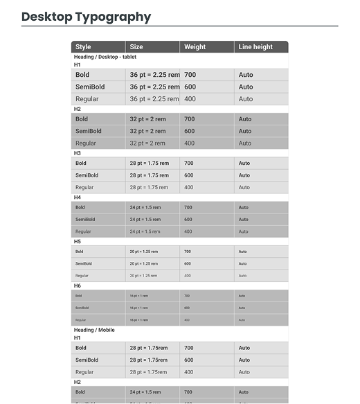
Tipografía — Estilos
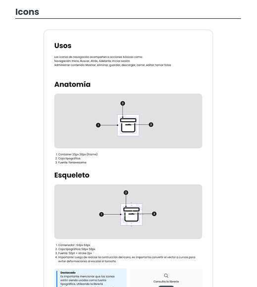
Iconos — Anatomía, uso y construcción
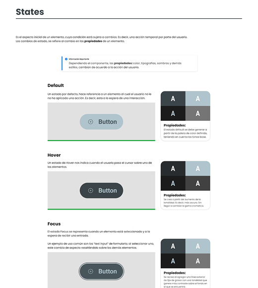
Estados de botón — Escala de grises
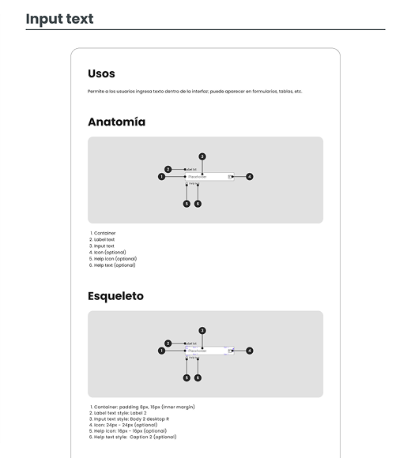
Input de texto — Variaciones y esqueleto
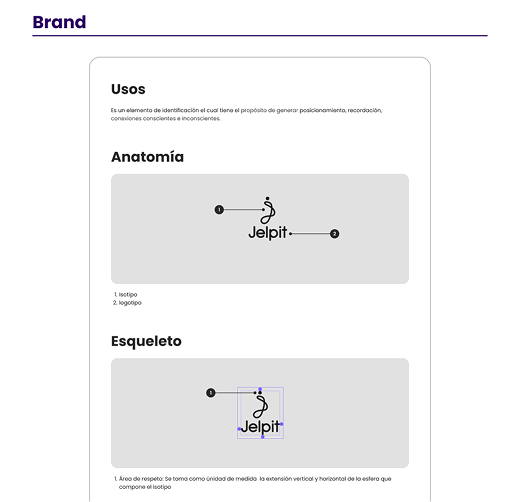
Marca — Usos, anatomía y esqueleto
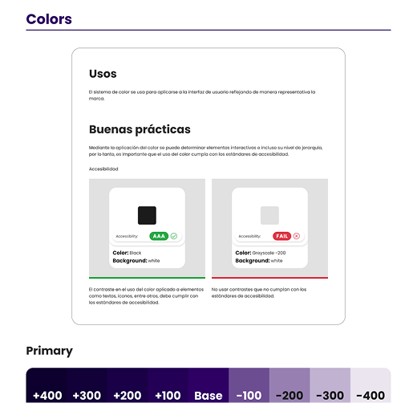
Colores — Uso, buenas prácticas y reglamentación
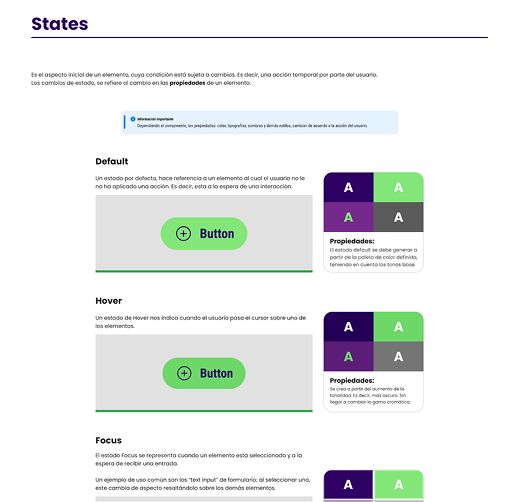
Estados de botón — Mobile y Desktop
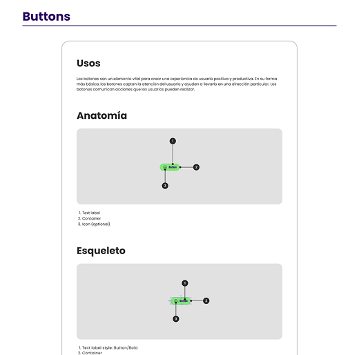
Botones — Uso, anatomía y construcción
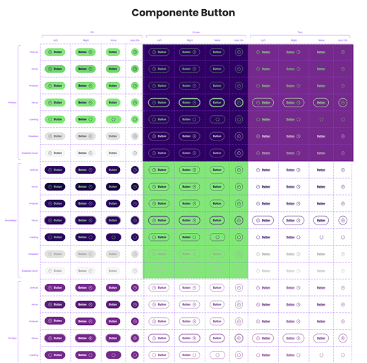
Todos los estados y variaciones del botón
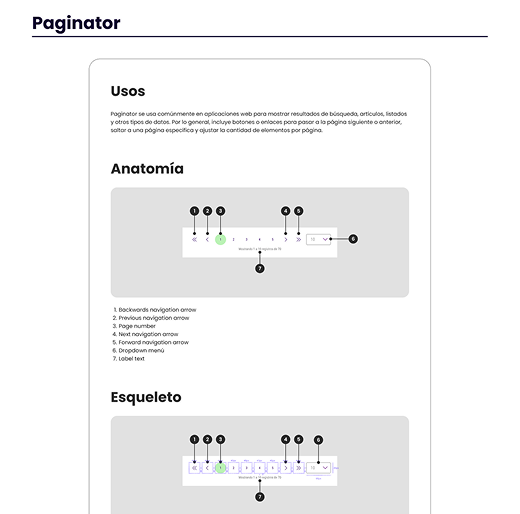
Componentes complejos y específicos de la marca
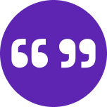